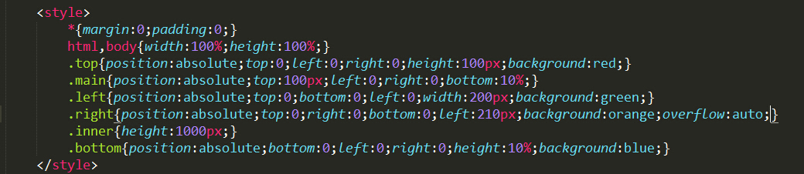
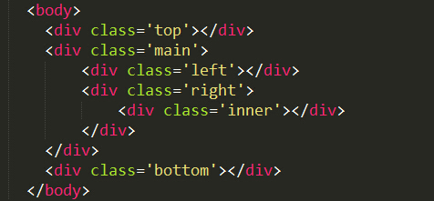
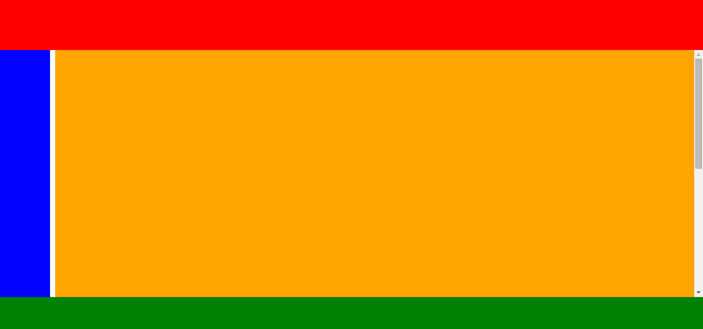

全屏布局
全屏布局指的是只有一屏内容，html没有滚动条，滚动条只出现在内容区。实现全屏布局的方式并不多。
①绝对定位法
CSS
HTML
对于利用绝对定位全屏布局实现，其实没有什么难以理解的。其中宽度高度的设置既可以是数值，也可以是百分比。其中要注意想要设置滚动条的那一块要设置overflow：auto
②flex
CSS

HTML

flex布局对于IE9及以下不支持。但是确实是很强大，可用绝对数值，可用百分比，而且如果想实现top left bottom自适应的话，绝对定位没有什么办法，只能用flex
最后截个图说明结果图吧
最近接触了一个jq插件fullscreen，那里说的全屏布局指的是html没有滚动条，有多屏内容，但是屏幕上只展示一屏内容。这样的效果最近的新网页出现的比较多。尤其是和CSS3结合通常能做出比较炫的效果。